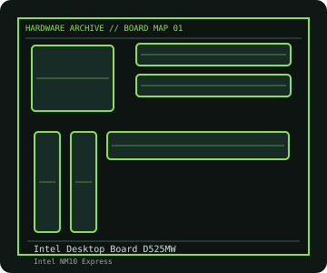

[ INDIVIDUAL COMPONENT // MOTHERBOARDS ]
Intel Desktop Board D525MW
Mini-ITX board with soldered dual-core Atom D525 and NM10 chipset; DDR3 SO-DIMM memory and legacy I/O. This entry identifies one product model; revision and firmware qualifications are stated below.

IDENTIFICATION: Check the PCB silkscreen, printed revision, assembly code, and firmware identifier on the actual board. Similar model names and PCB revisions may use different specifications or firmware.
Specifications
| Catalog subcategory | Legacy Intel desktop platforms |
|---|---|
| Exact board / model | Intel Desktop Board D525MW |
| Era / platform | Intel Atom Cedar Trail Mini-ITX board, introduced 2011 |
| CPU and socket | Intel Atom D525, dual-core 1.8 GHz, soldered (not socket-upgradable) |
| Chipset / controller | Intel NM10 Express |
| Memory | Two 204-pin DDR3 SO-DIMM sockets; Intel product brief lists up to 4 GB DDR3-800/1066, non-ECC |
| Expansion and connectivity | One PCI slot and Mini Card connector; two SATA 3 Gb/s; VGA, Gigabit Ethernet, USB 2.0, serial and parallel headers/ports; Mini-ITX 170 × 170 mm |
| Firmware | Intel legacy BIOS; use Intel's D525MW-specific BIOS files and recovery instructions, not firmware for similarly named D525 boards. |
Compatibility and revision notes
CPU and NM10 are board-integrated. SO-DIMM type/capacity, BIOS image identity and the Mini Card key/antenna arrangement should be checked against the technical product specification before servicing.
Physical socket fit alone does not establish compatibility. Verify the exact processor support list, minimum BIOS, memory population rules, case dimensions, power connectors and shared-lane behavior in the cited model documentation before installation.
Preservation and repair
Inspect the soldered Atom heatsink retention, board-level electrolytic capacitors, barrel/header polarity if an embedded enclosure was used, and the condition of legacy I/O headers. Save the BIOS settings and record the board's AA/serial code before replacing the battery.
For an archive record, photograph the PCB and labels before cleaning; note serial/date codes, BIOS/BMC versions, accessories, known faults, repairs, and test conditions. Use ESD-safe handling and never apply power with loose conductive hardware beneath the board.
Sources & further reading
- Intel — Desktop Board D525MW product briefIntel product brief for the identified board.
- Intel D525MW technical product specification (archived copy)Archived copy of Intel's board-specific technical specification and connector/recovery details.
Manufacturer model documentation is the primary reference; confirm the document revision and board markings when specifications vary by revision or SKU.